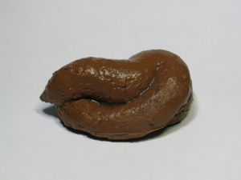

Juegos Tycoon
 De: La Frikipedia, la enciclopedia extremadamente seria.
De: La Frikipedia, la enciclopedia extremadamente seria.
De la serie Videojuegos:
Juegos Tycoon

¡Iluminati es más importante que estos putos juegos! ¿Acaso crees que se merecen más que él estar en esta infobox?
| Desarrollado por:
|
UnaBruja(también llamada suegra)
|
| Distribuido por:
|
Su nombre es Ralph
|
| Diseñado por:
|
Jesucristo
|
| Motor
|
De formula 1
|
| Género(s)
|
Desquiciante
|
| Fecha de lanzamiento:
|
No se sabe cuando, pero desde un rascacielos.
|
| Modos de juego:
|
¿Es eso una indirecta?
|
| Requisitos:
|
{{{requisitos}}}
|
| Disponible en:
|
Carnicerías Árabes
|
| Formatos:
|
En colorines
|
| Edades:
|
La medieval mola.
|
| Puntuaciones:
|
con Números que oscilan entre 0 y el muchillón
|
Do, Re, Mi, etc...
«Son unos juegos que no valen su peso en mierda de elefante. Van sobre comprar cosas, que te dan dinero, con el que compras más cosas, que te aportan más dinero. Es un ciclo vicioso, y me dan ganas de coger al monguer que ha creado esto y arrancarle la cabeza...»
~ Juanjo, creador de los juegos tycoon y virrey de Murcia (contesto esto mientras le preguntaban porqué corría desnudo en público)
Objetivo del juego
En un principio, eran inocentes juegos cuya única función ya nos ha descrito nuestro querido Juanjo: Empiezas con una pequeña suma de dinero (La cantidad suele ser 0 fajardos, moneda oficial de los juegos tycoon). Con esta cantidad vas comprando estructuras (Por ejemplo una máquina de fajardos, o un robot de fajardos, o tu madre en bragas) que a la larga te aportan más dinero. Desgraciadamente, estos juegos solo aparentan ese objetivo; su verdadera intención es convertirnos en monstruos retromonguers comedores de dinosaurios (lo cual no les beneficia en nada, simplemente lo hacen por joder).
 Esta mierda es una alusión a tu cerebro después de jugar al juego
Apariencia
Realmente con la vaga descripción de arriba cuesta imaginarse un poco la putísima mierda de interfaz del juego (que tampoco es gran cosa), así que ya pondremos ejemplos de estas aberraciones un poco más abajo.
¿Sabías que...?
- ¿Estos juegos apenas los conoce nadie, y por eso este artículo a penas vale la pena?
- ¿Realmente solo existen unos pocos, y por eso su importancia es ínfima?
- ¿Venecia se está hundiendo cada año unos pocos centímetros bajo el agua?
- ¿Hitler solo tenía un testículo?
- ¿Pikachu evoluciona a raichu con una piedra trueno?
- ¿Cada 60 segundos pasa 1 minuto?
- ¿Rita Barberá come niños en su mansión de Villa Caloret?
- ¿Todo lo anterior es cierto?¿Lo sabías?¿Eh?¿Eh?
- Y ya está... si sabías todo eso, ¿Sabías que eres aspirante a Creador de Juegos Tycoon?
Ejemplos de juegos tycoon clásicos
(Búscalos por gugol o moriré)
- Tangerine Tycoon
- Adventure Capitalist
- Lo de arriba con un 2 delante.
Autor(es):
- ELFRIKINATOR
- PopeyeCaraCulo
Frikipedia 2005-2016, Licencia
GFDL 1.2 - Extraído por FrikiLeaks